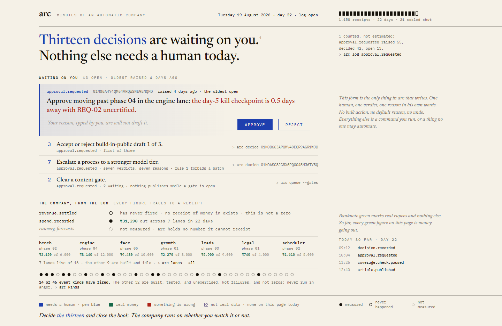
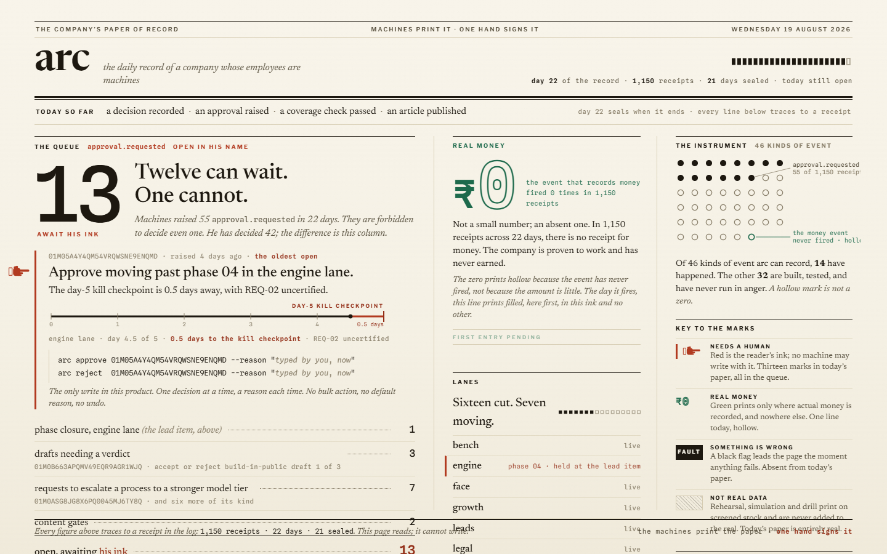
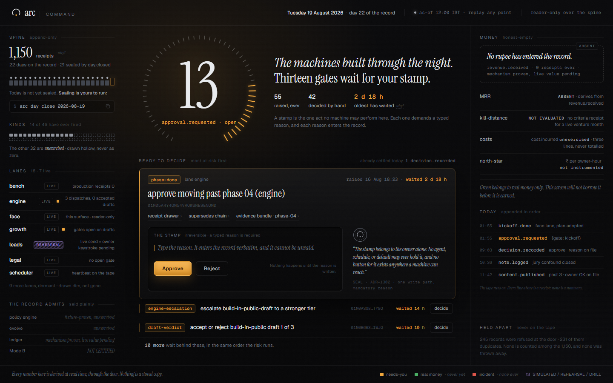
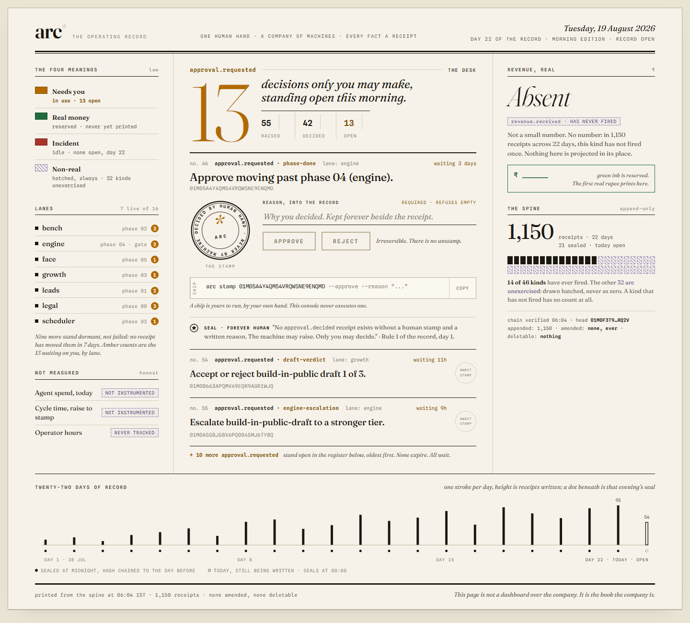
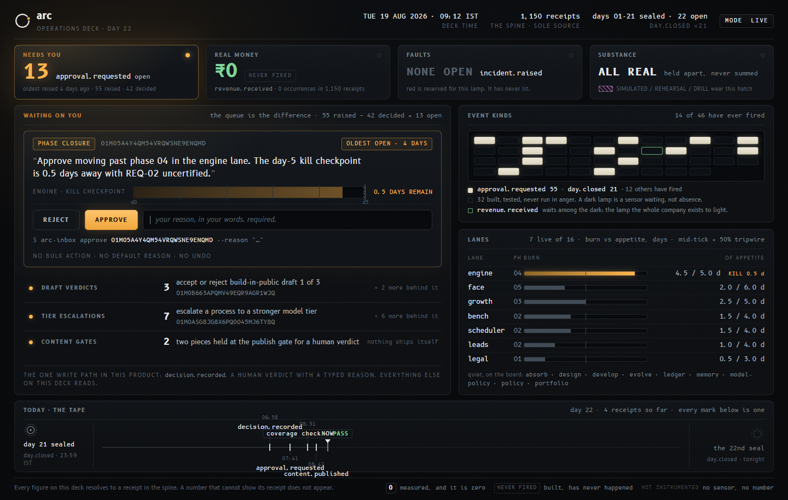
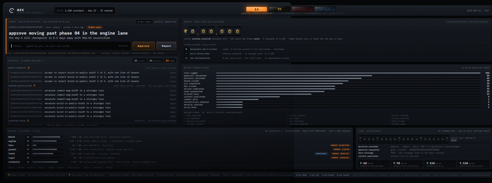

The previous round scored 18/100. Its brief specified the look; these six were given a brief that specifies only what is true and what would be a lie, and hands everything else to the designer.
Scroll each panel. My own scores are below each one, and I have opened every render rather than reading a report about it. No single one of these is 90 yet, and the last block says what I would do about that.






None of these is 90 on its own. But the best moments are spread across four of them, and they are not in conflict, because each solves a different part of the same screen:
Those four together are a 90. The reason they are separable is that the open brief let each designer solve the problem from a different end, instead of four people rendering one person's taste.
Every figure in all six pages is real: 1,150 receipts, 13 open approvals, 14 of 46 kinds fired, 7 live lanes, and a revenue event that has never once happened.